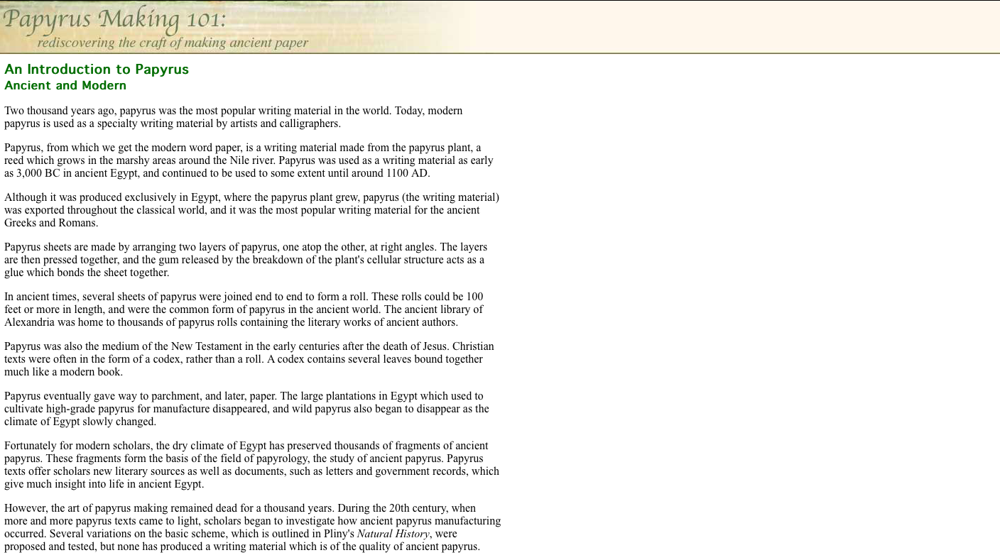
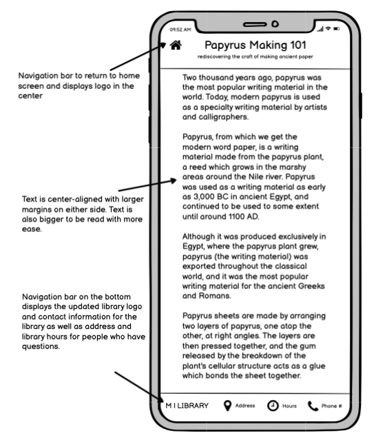
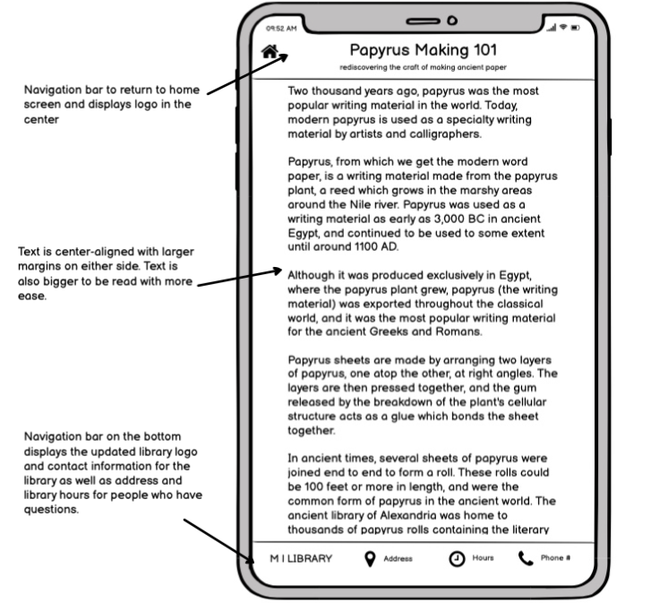
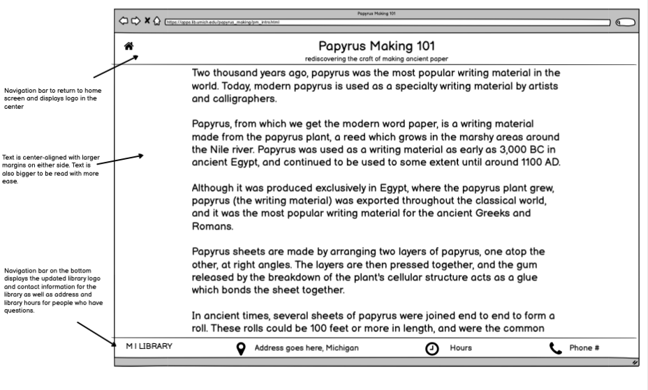
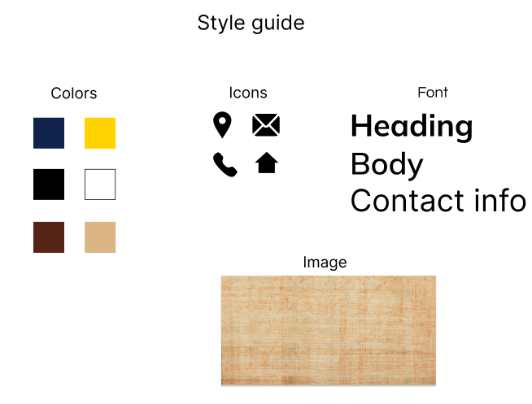
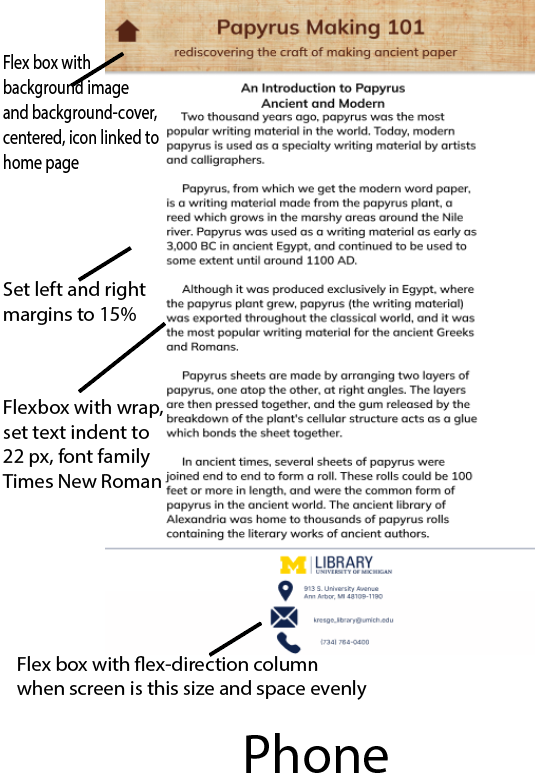
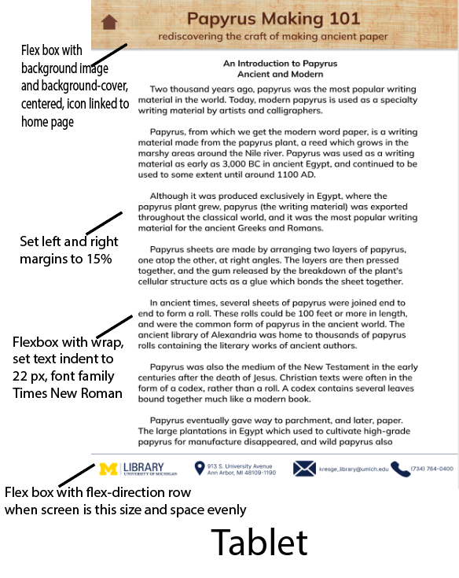
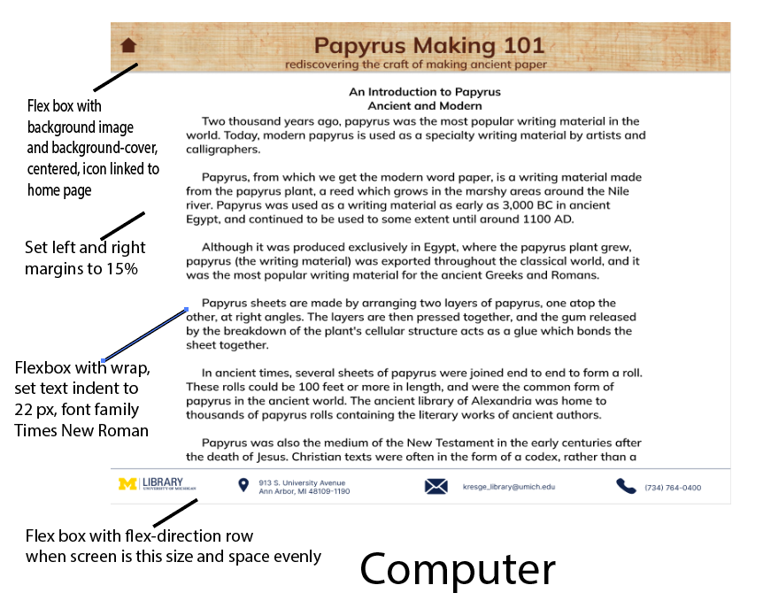
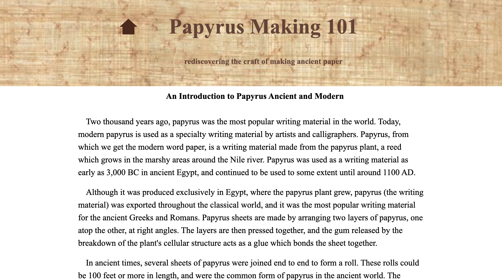

A classic UIUX assignment is to redesign an existing user interface. I chose this website to redesign because I remembered when I was researching ancient paper making skills I came across this on the University of Michigan Papyrus Collection site and thought it looked extremely primitive despite the interesting topic.
Here is the original design for the website:
Analyzing the Website
Here are some of the usability issues I have identified with this website:
I evaluated the accessibility using WAVE, a web accessibility evaluation tool, to identify potential issues with the webpage. Below are some of the issues WAVE found:
I agree with all of these issues, even for those who are not visually impaired the text is very small and requires the viewer to zoom into the page in order to read the text. I also agree that alternative text and an identifier for language is important to help screen readers accurately portray the content of the webpage.
Prototyping the New Website
First I used Balsamiq to create low-fidelity wireframe prototypes for what the new website would look like on different screens along with a style guide:
   Then I used Figma to create high-fidelity prototypes for my new design of the website:
  The Redesigned Website
Below is a screenshot and link to the website I redesigned, the goal was to ma7ke the layout modern and simple.
